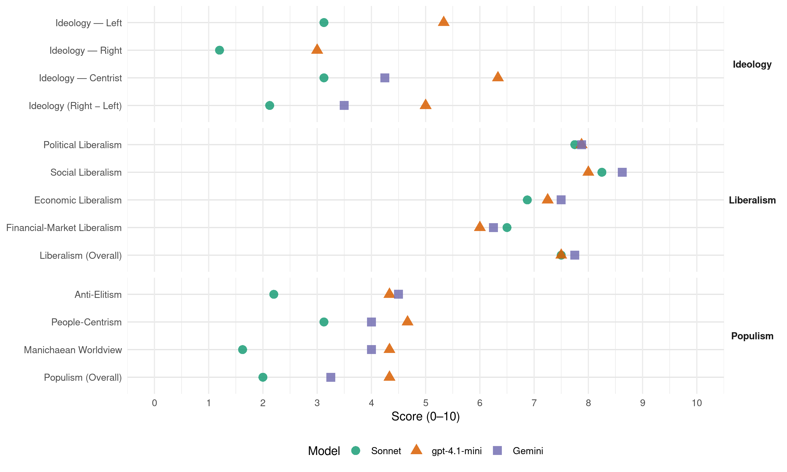

(Israel, 2022)
manifesto_id 72440_202211
Get full text: This site shows derived annotations and short verbatim quotes only. The full manifesto text is © Manifesto Project / WZB — obtain it via manifesto-project.wzb.eu using the manifesto_id above.
Headline scores
| Dimension | Sonnet | gpt-4.1-mini | Gemini |
|---|---|---|---|
| Populism (Overall) | 2.0 | 4.3 | 3.2 |
| Anti-Elitism | 2.2 | 4.3 | 4.5 |
| People-Centrism | 3.1 | 4.7 | 4.0 |
| Manichaean Worldview | 1.6 | 4.3 | 4.0 |
| Ideology (Right − Left) | 2.1 | 5.0 | 3.5 |
| Liberalism (Overall) | 7.5 | 7.5 | 7.8 |
| Political Liberalism | 7.8 | 7.9 | 7.9 |
| Social Liberalism | 8.2 | 8.0 | 8.6 |
| Economic Liberalism | 6.9 | 7.2 | 7.5 |
| Financial-Market Liberalism | 6.5 | 6.0 | 6.2 |
Evidence per dimension
Economic Liberalism
Gemini · score 8.0 · verified · chunk 1
“הסרת חסמים בירוקרטיים לייבוא תוך שמירה על הבטיחות”
הובלנו את רפורמת היבוא: הסרת חסמים בירוקרטיים לייבוא תוך שמירה על הבטיחות והאיכות
Gemini · score 8.0 · verified · chunk 2
“צמצום בירוקרטיה ורגולציה המכבידה ומאיטה את קצב ההקמה”
יש עתיד תוסיף לפעול לקידום אזורי תעשייה מרחביים המשרתים כמה רשויות ויישובים, להגדלת התקציבים לפיתוח אזורי תעשייה, לצמצום בירוקרטיה ורגולציה המכבידה ומאיטה את קצב ההקמה של אזורי התעשייה
Gemini · score 8.0 · verified · chunk 3
“שיפור התחרות ופתיחת מלונות ואתרי נופש חדשים”
נוריד את מחירי החופשות בישראל, על ידי שיפור התחרות ופתיחת מלונות ואתרי נופש חדשים ומגוונים. נקיים תיירות ברת קיימא
Gemini · score 8.0 · verified · chunk 4
“אשר תיצור תחרות בשוק הכשרות”
ניישם במלואה את רפורמת הכשרות אשר תיצור תחרות בשוק הכשרות, תייעל את מתן השירות
Gemini · score 7.0 · verified · chunk 5
“להקל את הרגולציה והבירוקרטיה כדי ששוק”
על ידי שימוש באפליקציות שתאפשרנה שיתוף נסיעות ובכך נפעל להקל את הרגולציה והבירוקרטיה כדי ששוק התחבורה השיתופית, יתפתח בארץ
Gemini · score 7.0 · verified · chunk 6
“לצמצום בירוקרטיה ולפיתוח רגולציה שתקל על הקמת עסקים”
טכנולוגיות רפואיות, אינטליגנציה מלאכותית. נפעל לצמצום בירוקרטיה ולפיתוח רגולציה שתקל על הקמת עסקים בשוק הישראלי ועל ניהולם. נקדם את הנגשת
Gemini · score 7.0 · verified · chunk 7
“לצמצום הרגולציה ולהקלה על יזמי”
אנו נוביל ליישום של מספר צעדים אופרטיביים לצמצום הרגולציה ולהקלה על יזמי האנרגיה המתחדשת.
Gemini · score 7.0 · verified · chunk 8
“לאפשר לחקלאים תחרות הוגנת עם מדינות”
ממוצע של המים ב-OECD, וזאת כדי לאפשר לחקלאים תחרות הוגנת עם מדינות בחו”ל. ניהול משק המים
gpt-4.1-mini · score 8.0 · verified · chunk 1
“רפורמת היבוא שתוזיל את עגלת הקניות. הגדלנו את היצוא ב-25%. הובלנו למתווה פיצוי לעצמאים בגין הפסדים בגל האומיקרון”
הרחבנו את הזכאות לנקודות זיכוי להורים עובדים כדי להקל על יוקר המחייה של משפחות צעירות. הובלנו לירידה באבטלה ל- 3.6%. היקף נמוך מזה שהיה טרם משבר הקורונה. הובלנו את רפורמת היבוא: הסרת חסמים בירוקרטיים לייבוא תוך שמירה על הבטיחות והאיכות- רפורמה בייבוא שתוזיל את עגלת הקניות. הגדלנו את היצוא ב-25%. הובלנו למתווה פיצוי לעצמאים בגין הפסדים בגל האומיקרון.
gpt-4.1-mini · score 7.0 · verified · chunk 2
“טיוב הרגולציה ושיפור הסביבה העסקית”
טיוב הרגולציה ושיפור הסביבה העסקית- אחד החסמים העומדים היום בפני התפתחות כלכלית של עסקים בישראל, הוא העובדה כי הם עומדים בפני רגולציה ממשלתית מכבידה.
gpt-4.1-mini · score 7.0 · verified · chunk 3
“נמשיך לפעול למען הגברת השימוש במכרזים פומביים למשרות ולרכש ממשלתי”
נמשיך לפעול למען הגברת השימוש במכרזים פומביים למשרות ולרכש ממשלתי – שקיפות בהליכי מינוי תפקידים במנהל הציבורי מבטיחה שוויון הזדמנויות בהתמודדות על משרות.
gpt-4.1-mini · score 7.0 · verified · chunk 4
“צמצום הרגולציה”
במסגרת חוק ההסדרים, הוקמה רשות אסדרה ממשלתית שתפעל לצמצום הרגולציה.
gpt-4.1-mini · score 7.0 · verified · chunk 5
“נמשיך לפעול לשדרוג משק החשמל ורשת הולכת החשמל”
נמשיך לפעול לשדרוג משק החשמל ורשת הולכת החשמל כדי להאיץ את המעבר לאנרגיות מתחדשות, נקדם פרויקטים להקמת אנרגיות מתחדשות ואגירת אנרגיה ונסיר חסמים בפני יזמי אנרגיות מתחדשות.
gpt-4.1-mini · score 7.0 · verified · chunk 6
“יש עתיד תפעל לפיתוח כלכלה ירוקה, לרבות הכנסת שיקולי כלכלה סביבתית בהערכת פרויקטים ממשלתיים”
כלכלה מעגלית וירוקה יש עתיד תפעל לפיתוח כלכלה ירוקה, לרבות הכנסת שיקולי כלכלה סביבתית בהערכת פרויקטים ממשלתיים, כך שהעלות הסביבתית תוכלל בתחשיבי עלות-תועלת של הפרויקט מתוך הבטחת מדיניות “המזהם משלם”. נפעל למתן תמריצים ממשלתיים למיזמים התומכים ומפתחים כלכלה ירוקה, במיוחד “כלכלה מעגלית”, שבה הפסולת הופכת למשאב.
gpt-4.1-mini · score 8.0 · verified · chunk 7
“נגדיל את הזכויות הסוציאליות של בעלי עסקים קטנים ובינוניים ונעניק להם דמי מחלה וגמלת אבל לעצמאיים”
נגדיל את הזכויות הסוציאליות של בעלי עסקים קטנים ובינוניים ונעניק להם דמי מחלה וגמלת אבל לעצמאיים ובכך נצמצם את האפליה. נקבע דמי אבטלה לעצמאיים.
gpt-4.1-mini · score 7.0 · verified · chunk 8
“נפעל לעידוד הקמת עסקים קטנים ובינוניים ויצירת מקורות תעסוקה איכותיים”
עידוד תעסוקה בפריפריה – הדרך הטובה ביותר להגדלת אפשרויות התעסוקה היא על ידי עידוד הקמת עסקים קטנים ובינוניים ויצירת מקורות תעסוקה איכותיים, כדוגמת מקצועות היי-טק, ביו-טק ומחקר.
Sonnet · score 8.0 · verified · chunk 1
“הורדת חסמי יבוא ולהגביר את התחרות”
רפורמת היבוא נכנסה לתוקפה בחודש יוני 2022 ומטרתה להוריד חסמי יבוא ולהגביר את התחרות במשק הישראלי
Sonnet · score 7.0 · verified · chunk 2
“צמצום בירוקרטיה ורגולציה המכבידה”
להגדלת התקציבים לפיתוח אזורי תעשייה, לצמצום בירוקרטיה ורגולציה המכבידה ומאיטה את קצב ההקמה של אזורי התעשייה
Sonnet · score 7.0 · verified · chunk 3
“שיפור התחרות ופתיחת מלונות”
נוריד את מחירי החופשות בישראל, על ידי שיפור התחרות ופתיחת מלונות ואתרי נופש חדשים ומגוונים
Sonnet · score 6.0 · verified · chunk 4
“תחרות בשוק הכשרות”
ניישם במלואה את רפורמת הכשרות אשר תיצור תחרות בשוק הכשרות, תייעל את מתן השירות, תעקור מן השורש תופעות של שחיתות וניגודי עניינים
Sonnet · score 7.0 · verified · chunk 5
“הקלת הרגולציה והבירוקרטיה”
יש עתיד מתחייבת לפעול להקלת הרגולציה והבירוקרטיה כדי לאפשר לשוק התחבורה השיתופית להתפתח בארץ
Sonnet · score 7.0 · verified · chunk 6
“נפעל לצמצום בירוקרטיה ולפיתוח רגולציה”
נפעל לצמצום בירוקרטיה ולפיתוח רגולציה שתקל על הקמת עסקים בשוק הישראלי ועל ניהולם
Sonnet · score 7.0 · verified · chunk 7
“נסיר חסמים בפני יזמי אנרגיות מתחדשות”
נפעל להגדלה דרמטית של שימוש באנרגיות מתחדשות לייצור חשמל, נסיר חסמים בפני יזמי אנרגיות מתחדשות ונצמצם את הבירוקרטיה.
Sonnet · score 6.0 · verified · chunk 8
“תחרות הוגנת עם מדינות בחו”ל”
נוודא כי מחיר המטרה יהיה מותאם למחיר הממוצע של המים ב-OECD, וזאת כדי לאפשר לחקלאים תחרות הוגנת עם מדינות בחו”ל
Financial-Market Liberalism
Gemini · score 7.0 · verified · chunk 1
“קידום בורסה לעסקים קטנים, פיתוח קרן בין מגזרית”
נפעל כדי להרחיב את סל השירותים המימונים למגזר העסקי, כגון: קידום בורסה לעסקים קטנים, פיתוח קרן בין מגזרית
Gemini · score 7.0 · verified · chunk 2
“הגברת התחרויות של הגופים החוץ בנקאיים על ידי הרחבת מקורות המימון”
במטרה להנגיש את האשראי לעסקים קטנים ובינוניים, יש עתיד תקדם רפורמה מקיפה בתחום, באמצעות קידום מספר שינויים מהותיים, בין היתר פתיחת מאגרי האשראי לשחקנים נוספים, צמצום פערי מידע אודות הלווים בין נותני אשראי בשוק, הגברת התחרויות של הגופים החוץ בנקאיים על ידי הרחבת מקורות המימון.
Gemini · score 5.0 · verified · chunk 6
“לחייב גופים מוסדיים, כמו בנקים, חברות ביטוח וקרנות הון-סיכון, לשקול שיקולים סביבתיים”
הפסולת הופכת למשאב. כמו כן נקדם חקיקה המחייבת גופים מוסדיים, כמו בנקים, חברות ביטוח וקרנות הון-סיכון, לשקול שיקולים סביבתיים בעת ביצוע השקעות פיננסיים באמצעות
Gemini · score 6.0 · verified · chunk 7
“רפורמה בשוק האשראי לעסקים קטנים”
רפורמה בשוק האשראי רפורמה בשוק האשראי לעסקים קטנים ובינוניים- שוק האשראי לעסקים קטנים ובינוניים מאופיין בריכוזיות גבוהה ונשלט כמעט באופן בלעדי על ידי תאגידים בנקאיים.
gpt-4.1-mini · score 6.0 · verified · chunk 2
“רפורמה בשוק האשראי לעסקים קטנים ובינוניים”
רפורמה בשוק האשראי לעסקים קטנים ובינוניים מאופיין בריכוזיות גבוהה ונשלט כמעט באופן בלעדי על ידי תאגידים בנקאיים.
gpt-4.1-mini · score 6.0 · verified · chunk 6
“נקדם חקיקה המחייבת גופים מוסדיים, כמו בנקים, חברות ביטוח וקרנות הון-סיכון, לשקול שיקולים סביבתיים בעת ביצוע השקעות פיננסיים”
כלכלה מעגלית וירוקה יש עתיד תפעל לפיתוח כלכלה ירוקה, לרבות הכנסת שיקולי כלכלה סביבתית בהערכת פרויקטים ממשלתיים, כך שהעלות הסביבתית תוכלל בתחשיבי עלות-תועלת של הפרויקט מתוך הבטחת מדיניות “המזהם משלם”. נפעל למתן תמריצים ממשלתיים למיזמים התומכים ומפתחים כלכלה ירוקה, במיוחד “כלכלה מעגלית”, שבה הפסולת הופכת למשאב. כמו כן נקדם חקיקה המחייבת גופים מוסדיים, כמו בנקים, חברות ביטוח וקרנות הון-סיכון, לשקול שיקולים סביבתיים בעת ביצוע השקעות פיננסיים באמצעות כספי ציבור.
Sonnet · score 7.0 · verified · chunk 1
“קידום בורסה לעסקים קטנים”
נפעל כדי להרחיב את סל השירותים המימונים למגזר העסקי, כגון: קידום בורסה לעסקים קטנים, פיתוח קרן בין מגזרית
Sonnet · score 7.0 · verified · chunk 2
“פתיחת מאגרי האשראי לשחקנים נוספים”
נפעל להנגיש את האשראי לעסקים קטנים ובינוניים, יש עתיד תקדם רפורמה מקיפה בתחום, באמצעות קידום מספר שינויים מהותיים, בין היתר פתיחת מאגרי האשראי לשחקנים נוספים
Sonnet · score 6.0 · verified · chunk 6
“גופים מוסדיים, כמו בנקים, חברות ביטוח”
נקדם חקיקה המחייבת גופים מוסדיים, כמו בנקים, חברות ביטוח וקרנות הון-סיכון, לשקול שיקולים סביבתיים בעת ביצוע השקעות פיננסיים
Sonnet · score 6.0 · verified · chunk 7
“רפורמה מקיפה בתחום”
שוק האשראי לעסקים קטנים ובינוניים מאופיין בריכוזיות גבוהה ונשלט כמעט באופן בלעדי על ידי תאגידים בנקאיים. נתח השוק של התאגידים הללו עמד על כ-95%. כדי להנגיש את האשראי לעסקים קטנים ובינוניים, תקדם יש עתיד רפורמה מקיפה בתחום, באמצעות קידום מספר שינויים מהותיים, בין היתר פתיחת מאגרי האשראי לשחקנים נוספים
Political Liberalism
Gemini · score 8.0 · verified · chunk 1
“לחזק את הדמוקרטיה הליברלית בעולם ולהילחם בפופוליזם”
עלינו להיות חלק פעיל מהמאמץ לחזק את הדמוקרטיה הליברלית בעולם ולהילחם בפופוליזם המסוכן
Gemini · score 8.0 · verified · chunk 2
“השחיתות השלטונית הפכה לאיום אסטרטגי על החברה ועל הדמוקרטיה”
מלחמה בשחיתות הציבורית מה שינינו? כדי למנוע שחיתות ושימוש לא ראוי בכספי ציבור… השחיתות השלטונית הפכה לאיום אסטרטגי על החברה ועל הדמוקרטיה הישראלית.
Gemini · score 8.0 · verified · chunk 3
“מערכת האיזונים והבלמים הראויה בין שלושתן”
הרשות המבצעת, לשופטת ולמחוקקת בתוך כדי מיסוד מערכת האיזונים והבלמים הראויה בין שלושתן. אנו שואפים לקדם מערכת פוליטית
Gemini · score 9.0 · verified · chunk 4
“מערכת האיזונים והבלמים הראויה בין שלושתן”
היחסים בין הרשות המבצעת, לשופטת ולמחוקקת בתוך כדי מיסוד מערכת האיזונים והבלמים הראויה בין שלושתן. אנו שואפים לקדם
Gemini · score 7.0 · verified · chunk 5
“החלטה תועבר לידי מועצות הערים”
תחבורה ציבורית מצומצמת בשבת באזורים חילוניים. ההחלטה תועבר לידי מועצות הערים המכירות היטב את אופי השכונות
Gemini · score 8.0 · verified · chunk 6
“שוויון לכלל האזרחים הינו נשמת אפה של המדינה דמוקרטית”
הבטחת חופש דת, חופש מדת ושוויון לכל אזרחי המדינה, ללא תלות באמונתם, מאידך גיסא. שוויון לכלל האזרחים הינו נשמת אפה של המדינה דמוקרטית. ערך זה מעוגן בהכרזת העצמאות
Gemini · score 7.0 · verified · chunk 7
“מדינת ישראל תהא פתוחה לעליה”
עליה וקליטה מה שינינו? בעקבות המלחמה באוקראינה סייענו ליותר מ-30,000 עולים חדשים להגיע לישראל. המשכנו במבצע ‘צור ישראל’, שנועד להביא ארצה כ-2,000 עולים מקרב הקהילות המבקשות עלייה לארץ מאתיופיה. מה נשנה? נפעל לייצר תמריצים תעסוקתיים במשק, הן למעסיקים והן לעולים עצמם כדי לשלבם בהקדם בשוק העבודה הישראלי. נכיר בוותק המקצועי בארץ המוצא. נאבק באפלייה ובגזענות כלפי יהודי אתיופיה ונוודא כי הם מקבלים את הכלים לשילוב מיטבי. הקדמה “מדינת ישראל תהא פתוחה לעליה יהודית ולקיבוץ גלויות” (מתוך מגילה העצמאות). מדינת ישראל היא מדינתם של כל יהודי העולם, ובכך שעריה יהיו פתוחים כביתם של יהודי התפוצות והגולה.
Gemini · score 8.0 · verified · chunk 8
“חופש ביטוי, עידוד יצירה ונגישות לתרבות”
מלחמה, משבר אישי או מגפה. חופש ביטוי, עידוד יצירה ונגישות לתרבות הם מרכיב חיוני בחוסנה של חברה.
gpt-4.1-mini · score 9.0 · verified · chunk 1
“הצהרת ירושלים ההיסטורית, המעגנת את היחסים המיוחדים והאסטרטגיים בין ישראל לארה”ב”
ביקור חשוב בישראל של נשיא ארה”ב ה-46 ג’ו ביידן. בביקור זה חתמו נשיא ארצות הברית וראש הממשלה יאיר לפיד על “הצהרת ירושלים ההיסטורית, המעגנת את היחסים המיוחדים והאסטרטגיים בין ישראל לארה”ב“. היחסים עם ארה”ב הם משענת אסטרטגית ראשונה במעלה לישראל ושיקול מרכזי בפעולתה המדינית והצבאית.
gpt-4.1-mini · score 8.0 · verified · chunk 2
“שקיפות של מעשי השלטון, בכל הדרגים”
שקיפות של מעשי השלטון, בכל הדרגים, היא בלם הכרחי מפני שחיתות, מפני ניגודי עניינים ומפני שימוש לרעה במשאבי הציבור ובכסף שלטוני.
gpt-4.1-mini · score 8.0 · verified · chunk 3
“נחוקק תיקונים לחוק יסוד: נשיא המדינה ולחוק יסוד: מבקר המדינה”
נחוקק תיקונים לחוק יסוד: נשיא המדינה ולחוק יסוד: מבקר המדינה, כדי שאדם שנגדו עומדים כתבי אישום פליליים בגין עבירות עוון או פשע, או אדם שהורשע בעבירה שעונשה למעלה משלושה חודשי מאסר לא יוכל להתמודד לתפקיד נשיא המדינה או מבקר המדינה.
gpt-4.1-mini · score 8.0 · verified · chunk 4
“חיזוק מעמדה ותפקידיה של הכנסת”
יש עתיד תפעל גם לחיזוק מעמדה ותפקידיה של הכנסת, שנחלשו משמעותית בשנים האחרונות, וכן לקידום מערכת המשפט והקלה על עומסיה.
gpt-4.1-mini · score 7.0 · verified · chunk 5
“הכנסת ה-24 אישרה בקריאה ראשונה חוק אקלים ממשלתי”
הכנסת ה-24 אישרה בקריאה ראשונה חוק אקלים ממשלתי, יש עתיד מאמינה שיש להרחיבו, כך שיכלול יעדי-על ויעדי ביניים שאפתניים יותר – במעבר לאנרגיות מתחדשות, בהתייעלות אנרגטית ובהפחתת הנסועה הפרטית.
gpt-4.1-mini · score 8.0 · verified · chunk 6
“יש עתיד מאמינה בקיומה של מדינת ישראל כמדינה יהודית ודמוקרטית”
הקדמה יש עתיד מאמינה בקיומה של מדינת ישראל כמדינה יהודית ודמוקרטית, כפי שהוגדרה מיום הקמתה. יש עתיד מאמינה שעל מדינת ישראל להגן ולשמר את היסודות שעליהם הושתתה המדינה; הזהות היהודית ואופייה היהודי של המדינה מחד גיסא, והבטחת חופש דת, חופש מדת ושוויון לכל אזרחי המדינה, ללא תלות באמונתם, מאידך גיסא.
gpt-4.1-mini · score 7.0 · verified · chunk 7
“הקמת נציבות אזרחים ותיקים – נציבות זו תהיה בעלת הסמכויות לדרוש ידיעות, מסמכים ודו”חות”
הקמת נציבות אזרחים ותיקים – נציבות זו תהיה בעלת הסמכויות לדרוש ידיעות, מסמכים ודו”חות הרלוונטיים למדיניות בנושא אזרחים ותיקים, וכן תקבע שמשרדי הממשלה יצטרכו לתת את הדעת על כל חקיקה, איך היא משפיעה על אזרחים ותיקים.
gpt-4.1-mini · score 8.0 · verified · chunk 8
“חיזוק מעורבות הורים מכבדת וליצירת מנגנוני השפעה משותפים”
נפעל לחיזוק מעורבות הורים מכבדת וליצירת מנגנוני השפעה משותפים. נפעל לעגן הסדרה של מעמד ההורים וייצוגם במערכת ולאפשר את זכותם של ההורים לשמוע ולהישמע ולהיות שותפים בקבלת ההחלטות הרלוונטיות.
Sonnet · score 9.0 · verified · chunk 1
“לחזק את הדמוקרטיה הליברלית בעולם”
עלינו להיות חלק פעיל מהמאמץ לחזק את הדמוקרטיה הליברלית בעולם ולהילחם בפופוליזם המסוכן
Sonnet · score 8.0 · verified · chunk 2
“שלטון החוק, להגינות ולמאבק שיטתי”
יש עתיד מחויבת ליושרה, לשלטון החוק, להגינות ולמאבק שיטתי ובלתי מתפשר בשחיתות השלטונית
Sonnet · score 8.0 · verified · chunk 3
“מערכת האיזונים והבלמים הראויה”
יש עתיד מחויבת להסדיר את היחסים בין הרשות המבצעת, לשופטת ולמחוקקת בתוך כדי מיסוד מערכת האיזונים והבלמים הראויה בין שלושתן
Sonnet · score 8.0 · verified · chunk 4
“מיסוד מערכת האיזונים והבלמים הראויה”
יש עתיד מחויבת להסדיר באופן הראוי את היחסים בין הרשות המבצעת, לשופטת ולמחוקקת בתוך כדי מיסוד מערכת האיזונים והבלמים הראויה בין שלושתן.
Sonnet · score 8.0 · verified · chunk 5
“חוק שוויון זכויות לאנשים עם מוגבלויות”
חוק שוויון זכויות לאנשים עם מוגבלויות מחייב הנגשת מוסדות ציבוריים לאנשים עם צרכים מיוחדים
Sonnet · score 8.0 · verified · chunk 6
“נחוקק את חוק יסוד השוויון”
לכן נחוקק את חוק יסוד השוויון ונתקן את חוק הלאום כך שערך השוויון יעוגן בו. התיקון המוצע לא רק יחזק את מדינת הלאום
Sonnet · score 6.0 · verified · chunk 7
“נוביל את המאבק באפליה ובגזענות”
יש עתיד מאמינה כי לשם שילובם המיטבי של יוצאי אתיופיה בחברה הישראלית על המדינה לקחת אחריות וחלק פעיל במאבק באפליה וגזענות כלפי ישראלים ממוצא אתיופי באמצעות חקיקה, אכיפה, חינוך הציבור והנכחה חיובית. נוביל את המאבק באפליה ובגזענות
Sonnet · score 7.0 · verified · chunk 8
“השיח הדמוקרטי”
מעודד סובלנות, מכבד את האחר ומוקיע תופעות של גזענות ואלימות… משפיע על השיח הדמוקרטי
Liberalism (Overall)
Gemini · score 8.0 · verified · chunk 1
“לחזק את הדמוקרטיה הליברלית בעולם ולהילחם בפופוליזם”
עלינו להיות חלק פעיל מהמאמץ לחזק את הדמוקרטיה הליברלית בעולם ולהילחם בפופוליזם המסוכן
Gemini · score 8.0 · verified · chunk 2
“שוויון בין המינים הוא ערך מרכזי וחשוב בחברה דמוקרטית”
נושאים עיקריים: הקדמה שוויון בין המינים הוא ערך מרכזי וחשוב בחברה דמוקרטית. מדינת ישראל, אשר העמידה את השוויון כערך בסיסי
Gemini · score 8.0 · verified · chunk 3
“מערכת האיזונים והבלמים הראויה בין שלושתן”
הרשות המבצעת, לשופטת ולמחוקקת בתוך כדי מיסוד מערכת האיזונים והבלמים הראויה בין שלושתן. אנו שואפים לקדם מערכת פוליטית
Gemini · score 9.0 · verified · chunk 4
“מערכת האיזונים והבלמים הראויה בין שלושתן”
היחסים בין הרשות המבצעת, לשופטת ולמחוקקת בתוך כדי מיסוד מערכת האיזונים והבלמים הראויה בין שלושתן. אנו שואפים לקדם
Gemini · score 7.0 · verified · chunk 5
“להקל את הרגולציה והבירוקרטיה כדי ששוק”
על ידי שימוש באפליקציות שתאפשרנה שיתוף נסיעות ובכך נפעל להקל את הרגולציה והבירוקרטיה כדי ששוק התחבורה השיתופית, יתפתח בארץ
Gemini · score 7.0 · verified · chunk 6
“שוויון לכלל האזרחים הינו נשמת אפה של המדינה דמוקרטית”
הבטחת חופש דת, חופש מדת ושוויון לכל אזרחי המדינה, ללא תלות באמונתם, מאידך גיסא. שוויון לכלל האזרחים הינו נשמת אפה של המדינה דמוקרטית. ערך זה מעוגן בהכרזת העצמאות
Gemini · score 7.0 · verified · chunk 7
“לצמצום הרגולציה ולהקלה על יזמי”
אנו נוביל ליישום של מספר צעדים אופרטיביים לצמצום הרגולציה ולהקלה על יזמי האנרגיה המתחדשת.
Gemini · score 8.0 · verified · chunk 8
“ללא הבדל דת, גזע, מין, מוגבלות”
לחיים משותפים של שכבות האוכלוסייה במדינת ישראל, ללא הבדל דת, גזע, מין, מוגבלות או זהות מינית.
gpt-4.1-mini · score 8.0 · verified · chunk 1
“הצהרת ירושלים ההיסטורית, המעגנת את היחסים המיוחדים והאסטרטגיים בין ישראל לארה”ב”
ביקור חשוב בישראל של נשיא ארה”ב ה-46 ג’ו ביידן. בביקור זה חתמו נשיא ארצות הברית וראש הממשלה יאיר לפיד על “הצהרת ירושלים ההיסטורית, המעגנת את היחסים המיוחדים והאסטרטגיים בין ישראל לארה”ב“. היחסים עם ארה”ב הם משענת אסטרטגית ראשונה במעלה לישראל ושיקול מרכזי בפעולתה המדינית והצבאית.
gpt-4.1-mini · score 8.0 · verified · chunk 2
“שקיפות של מעשי השלטון, בכל הדרגים”
שקיפות של מעשי השלטון, בכל הדרגים, היא בלם הכרחי מפני שחיתות, מפני ניגודי עניינים ומפני שימוש לרעה במשאבי הציבור ובכסף שלטוני.
gpt-4.1-mini · score 8.0 · verified · chunk 3
“נחוקק תיקונים לחוק יסוד: נשיא המדינה ולחוק יסוד: מבקר המדינה”
נחוקק תיקונים לחוק יסוד: נשיא המדינה ולחוק יסוד: מבקר המדינה, כדי שאדם שנגדו עומדים כתבי אישום פליליים בגין עבירות עוון או פשע, או אדם שהורשע בעבירה שעונשה למעלה משלושה חודשי מאסר לא יוכל להתמודד לתפקיד נשיא המדינה או מבקר המדינה.
gpt-4.1-mini · score 7.0 · verified · chunk 4
“חיזוק מעמדה ותפקידיה של הכנסת”
יש עתיד תפעל גם לחיזוק מעמדה ותפקידיה של הכנסת, שנחלשו משמעותית בשנים האחרונות, וכן לקידום מערכת המשפט והקלה על עומסיה.
gpt-4.1-mini · score 7.0 · verified · chunk 5
“חוק שוויון זכויות לאנשים עם מוגבלויות מחייב הנגשת מוסדות ציבוריים”
חוק שוויון זכויות לאנשים עם מוגבלויות מחייב הנגשת מוסדות ציבוריים לאנשים עם צרכים מיוחדים. יישום החוק, שעליו אמונות הרשויות המקומיות, נושא עלויות גבוהות ולכן במקרים רבים איננו מבוצע.
gpt-4.1-mini · score 7.0 · verified · chunk 6
“יש עתיד מאמינה בקיומה של מדינת ישראל כמדינה יהודית ודמוקרטית”
הקדמה יש עתיד מאמינה בקיומה של מדינת ישראל כמדינה יהודית ודמוקרטית, כפי שהוגדרה מיום הקמתה. יש עתיד מאמינה שעל מדינת ישראל להגן ולשמר את היסודות שעליהם הושתתה המדינה; הזהות היהודית ואופייה היהודי של המדינה מחד גיסא, והבטחת חופש דת, חופש מדת ושוויון לכל אזרחי המדינה, ללא תלות באמונתם, מאידך גיסא.
gpt-4.1-mini · score 7.0 · verified · chunk 7
“נגדיל את הזכויות הסוציאליות של בעלי עסקים קטנים ובינוניים ונעניק להם דמי מחלה וגמלת אבל לעצמאיים”
נגדיל את הזכויות הסוציאליות של בעלי עסקים קטנים ובינוניים ונעניק להם דמי מחלה וגמלת אבל לעצמאיים ובכך נצמצם את האפליה. נקבע דמי אבטלה לעצמאיים.
gpt-4.1-mini · score 8.0 · verified · chunk 8
“נפעל לחיזוק מעורבות הורים מכבדת וליצירת מנגנוני השפעה משותפים”
נפעל לחיזוק מעורבות הורים מכבדת וליצירת מנגנוני השפעה משותפים. נפעל לעגן הסדרה של מעמד ההורים וייצוגם במערכת ולאפשר את זכותם של ההורים לשמוע ולהישמע ולהיות שותפים בקבלת ההחלטות הרלוונטיות.
Sonnet · score 8.0 · verified · chunk 1
“ישראל כדמוקרטיה ליברלית חזקה”
נחזק את מעמדה של מדינת ישראל כדמוקרטיה ליברלית חזקה במזרח התיכון
Sonnet · score 8.0 · verified · chunk 2
“שוויון בין המינים הוא ערך מרכזי”
שוויון בין המינים הוא ערך מרכזי וחשוב בחברה דמוקרטית. מדינת ישראל, אשר העמידה את השוויון כערך בסיסי במגילת העצמאות
Sonnet · score 8.0 · verified · chunk 3
“מדינה יהודית ודמוקרטית ליברלית”
עיצוב הזהות היהודית של המדינה צריך להיעשות מתוך מחויבות לכלל המרכיבים הקיומיים – היותה יהודית, דמוקרטית, ליברלית, חזקה, מתקדמת ומשגשגת
Sonnet · score 7.0 · verified · chunk 4
“מיסוד מערכת האיזונים והבלמים הראויה”
יש עתיד מחויבת להסדיר באופן הראוי את היחסים בין הרשות המבצעת, לשופטת ולמחוקקת בתוך כדי מיסוד מערכת האיזונים והבלמים הראויה בין שלושתן.
Sonnet · score 8.0 · verified · chunk 5
“זכויות אנשים עם מוגבלויות לקבלת שירותים”
עיגון בחקיקה של זכויות אנשים עם מוגבלויות לקבלת שירותים חברתיים במטרה להרחיב את שילובם בקהילה
Sonnet · score 7.0 · verified · chunk 6
“שוויון זכויות חברתי ומדיני גמור לכל אזרחיה”
כמופיע בהכרזת העצמאות, נקבע כי המדינה: ‘תקיים שוויון זכויות חברתי ומדיני גמור לכל אזרחיה, בלי הבדל דת, גזע ומין’
Sonnet · score 7.0 · verified · chunk 7
“נסיר חסמים בפני יזמי אנרגיות מתחדשות”
נפעל להגדלה דרמטית של שימוש באנרגיות מתחדשות לייצור חשמל, נסיר חסמים בפני יזמי אנרגיות מתחדשות ונצמצם את הבירוקרטיה.
Sonnet · score 7.0 · verified · chunk 8
“ללא הבדל דת, גזע, מין, מוגבלות או זהות מינית”
להוביל קו של חינוך לחיים משותפים של שכבות האוכלוסייה במדינת ישראל, ללא הבדל דת, גזע, מין, מוגבלות או זהות מינית
Anti-Elitism
Gemini · score 4.0 · verified · chunk 1
“מדיניות ממשלות ישראל הייתה לדחוק את נושא הרווחה”
לאחר שנים שמדיניות ממשלות ישראל הייתה לדחוק את נושא הרווחה ממעלה סדר העדיפויות התקציבי
Gemini · score 6.0 · verified · chunk 2
“לא לפוליטיקאים העסוקים בעצמם ובטובתם האישית”
המדינה שלנו צריכה להיות שייכת למעמד הביניים ולאלה הנאבקים להיות חלק ממנו. לא למושחתים, לא לפוליטיקאים העסוקים בעצמם ובטובתם האישית, לא לבעלי האינטרסים
Gemini · score 4.0 · verified · chunk 3
“התדירות ההולכת וגוברת של מעשי שחיתות בזירה הציבורית”
במקום שלא ברור מה אסור, הכול מותר. התדירות ההולכת וגוברת של מעשי שחיתות בזירה הציבורית מחייבת נעילה של דלתות המרחב הציבורי
Gemini · score 4.0 · verified · chunk 4
“תעקור מן השורש תופעות של שחיתות”
תחרות בשוק הכשרות, תייעל את מתן השירות, תעקור מן השורש תופעות של שחיתות וניגודי עניינים ותאפשר פלורליזם
gpt-4.1-mini · score 3.0 · verified · chunk 2
“לא למושחתים, לא לפוליטיקאים העסוקים בעצמם”
המדינה שלנו צריכה להיות שייכת למעמד הביניים ולאלה הנאבקים להיות חלק ממנו. לא למושחתים, לא לפוליטיקאים העסוקים בעצמם ובטובתם האישית, לא לבעלי האינטרסים, לא לתאגידים הגדולים או לוועדים הגדולים.
gpt-4.1-mini · score 7.0 · verified · chunk 3
“היעדרם של כללים ברורים אשר למגבלות החוק על אישי ציבור המצויים בחקירה פלילית”
היעדרם של כללים ברורים אשר למגבלות החוק על אישי ציבור המצויים בחקירה פלילית שהוגש נגדם כתב אישום או הורשעו גורם להעמקת ההשחתה. במקום שלא ברור מה אסור, הכול מותר. התדירות ההולכת וגוברת של מעשי שחיתות בזירה הציבורית מחייבת נעילה של דלתות המרחב הציבורי בפני מי שהורשעו בעבר.
gpt-4.1-mini · score 3.0 · verified · chunk 4
“המאבק בשחיתות הציבורית”
תוכנית “נחשון” - השחיתות הציבורית ו”השחיתות החוקית” הפכו לאיום אסטרטגי על מדינת ישראל. המאבק בשחיתות הציבורית וה”שחיתות החוקית”
Sonnet · score 1.0 · mixed · chunk 1
“לדחוק את נושא הרווחה ממעלה סדר העדיפויות”
לאחר שנים שמדיניות ממשלות ישראל הייתה לדחוק את נושא הרווחה ממעלה סדר העדיפויות התקציבי
Sonnet · score 4.0 · mixed · chunk 2
“לא למושחתים, לא לפוליטיקאים העסוקים בעצמם”
המדינה שלנו צריכה להיות שייכת למעמד הביניים ולאלה הנאבקים להיות חלק ממנו. לא למושחתים, לא לפוליטיקאים העסוקים בעצמם ובטובתם האישית, לא לבעלי האינטרסים, לא לתאגידים הגדולים
Sonnet · score 3.0 · verified · chunk 3
“הפוליטיקאים שסרחו”
שטח אפור נרחב אשר שימש לא אחת יתד היאחזות לפוליטיקאים שסרחו, כאשר נתלו בהיעדר הפליליות של מעשיהם
Sonnet · score 4.0 · verified · chunk 4
“השחיתות הציבורית ו”השחיתות החוקית” הפכו לאיום אסטרטגי”
תוכנית “נחשון” - השחיתות הציבורית ו”השחיתות החוקית” הפכו לאיום אסטרטגי על מדינת ישראל. הסטנדרט המקובל היום, שלפיו האינטרס הפוליטי קודם לטובת הציבור, חייב להשתנות.
Sonnet · score 1.0 · verified · chunk 5
“הכסף הזה צריך לחזור לציבור”
עלות הפקקים המוערכת במשק עמדה על כ-35 מיליארד שקלים בשנת 2019… הכסף הזה צריך לחזור לציבור במקום ‘להישרף’ בפקק.
Sonnet · score 1.0 · verified · chunk 6
“נחוקק את חוק יסוד השוויון”
לכן נחוקק את חוק יסוד השוויון ונתקן את חוק הלאום כך שערך השוויון יעוגן בו
Sonnet · score 3.0 · mixed · chunk 7
“מדיניות מפלה, המעודדת את העסקים הגדולים בלבד”
העסקים הקטנים והבינוניים סבלו במשך שנים ממדיניות מפלה, המעודדת את העסקים הגדולים בלבד. זאת לצד רמת תחרותיות נמוכה במשק הישראלי וריכוזיות גבוהה.
Sonnet · score 2.0 · verified · chunk 8
“שחיתות ציבורית”
גירעונות ברשויות המקומיות הנובעים מפערים מבניים, מניהול לקוי, מיכולת גביית ארנונה נמוכה ולעיתים אף בשל שחיתות ציבורית
Ideology — Centrist
Gemini · score 4.0 · verified · chunk 1
“מדיניות ממשלות ישראל הייתה לדחוק את נושא הרווחה”
לאחר שנים שמדיניות ממשלות ישראל הייתה לדחוק את נושא הרווחה ממעלה סדר העדיפויות התקציבי
Gemini · score 6.0 · verified · chunk 2
“המדינה שלנו צריכה להיות שייכת למעמד הביניים”
השחיתות השלטונית נוגסת בשוויון ההזדמנויות וסותרת את חובת הנאמנות של נבחרי הציבור ושל משרתיו לציבור. המדינה שלנו צריכה להיות שייכת למעמד הביניים ולאלה הנאבקים
Gemini · score 3.0 · verified · chunk 3
“התנהלות זו עלולה לגרום לאיבוד אמון הציבור”
להיאבק על חפותו. התנהלות זו עלולה לגרום לאיבוד אמון הציבור בשיטת הממשל וברשויות השלטון במדינה.
Gemini · score 4.0 · verified · chunk 4
“עושה שימוש בכספי הציבור עבור הציבור”
המחילה על עצמה כללים קפדניים בנוגע לטוהר המידות. כזו המחזקת את ההון האנושי בממשלה ובמשרדיה ועושה שימוש בכספי הציבור עבור הציבור בלבד. יש עתיד תפעל
gpt-4.1-mini · score 5.0 · verified · chunk 2
“המדינה שלנו צריכה להיות שייכת למעמד הביניים”
המדינה שלנו צריכה להיות שייכת למעמד הביניים ולאלה הנאבקים להיות חלק ממנו. לא למושחתים, לא לפוליטיקאים העסוקים בעצמם ובטובתם האישית.
gpt-4.1-mini · score 7.0 · verified · chunk 3
“נפעל לאימוץ המלצות הוועדה הציבורית בראשות נשיא בית המשפט העליון לשעבר”
נפעל לאימוץ המלצות הוועדה הציבורית בראשות נשיא בית המשפט העליון לשעבר השופט בדימוס מאיר שמגר לעניין גיבוש כללי אתיקה לחברי הממשלה על ידי הממשלה ולהחלתם גם על חברי הכנסת, על ראשי רשויות מקומיות ועל כל נושאי משרה ציבורית אחרת.
gpt-4.1-mini · score 7.0 · verified · chunk 4
“יש עתיד שואפת לקיומה של חברה ישראלית אחת, מאוחדת”
יש עתיד שואפת לקיומה של חברה ישראלית אחת, מאוחדת, על כל מרכיביה ורבדיה השונים, שכולם בה ערבים זה לזה.
Sonnet · score 2.0 · verified · chunk 1
“מדיניות כלכלית אחראית”
הובילה יש עתיד מדיניות כלכלית אחראית, רצופה רפורמות חסרות תקדים
Sonnet · score 4.0 · verified · chunk 2
“מעמד הביניים, האדם העובד, המשרת את המדינה”
זו המשמעות של שינוי סדרי העדיפויות – להעמיד במרכז הכלכלה והחברה את מעמד הביניים, האדם העובד, המשרת את המדינה ומשלם מיסים
Sonnet · score 5.0 · verified · chunk 3
“שיח מכיל המבקש להביא”
לא שיח של שנאה, לא שיח המלבה קיטוב והקצנה, אלא שיח מכיל המבקש להביא את הסוגיות הסבוכות לידי הכרעה מחודשת
Sonnet · score 4.0 · verified · chunk 4
“ממשל נקי, שקוף, איכותי ומיטיב עם הציבור”
מפלגת יש עתיד שמה לה למטרה לקדם ממשל נקי, שקוף, איכותי ומיטיב עם הציבור. יש עתיד מחויבת להסדיר באופן הראוי את היחסים בין הרשות המבצעת, לשופטת ולמחוקקת
Sonnet · score 2.0 · verified · chunk 5
“שירותי יסודי שהמדינה מחויבת לספק”
מתן תשתיות תחבורה, ובייחוד מתן תחבורה ציבורית יעילה זמינה וזולה, הם שירותי יסודי שהמדינה מחויבת לספק לאזרחיה
Sonnet · score 2.0 · verified · chunk 6
“חיזוק הכוחות הבונים והמתונים”
בכוונתה של יש עתיד לפעול לחיזוק הכוחות הבונים והמתונים ולבנות בעזרתם שותפות פורייה
Sonnet · score 4.0 · verified · chunk 7
“הם המנוע האמיתי של המשק”
הם הדרך הטובה ביותר להיאבק באבטלה, בעוני ובפערים חברתיים. הם המנוע האמיתי של המשק, והלב הפועם של כל כלכלה בריאה וצומחת.
Sonnet · score 2.0 · verified · chunk 8
“חברה דמוקרטית מתקדמת”
יש עתיד רואה בהשכלה הגבוהה אבן דרך להשתלבות בשוק העבודה ולהפיכתם של הסטודנטים לאזרחים יצרנים בחברה דמוקרטית מתקדמת
Ideology — Left
gpt-4.1-mini · score 4.0 · verified · chunk 2
“לצמצם פערים חברתיים”
הם המנוע האמיתי של המשק, והלב הפועם של כל כלכלה בריאה וצומחת. למרות חשיבותם ותרומתם לכלכלה, העסקים הקטנים והבינוניים סבלו במשך שנים ממדיניות מפלה, המעודדת את העסקים הגדולים בלבד.
gpt-4.1-mini · score 6.0 · verified · chunk 3
“נפעל לחיזוק ההרתעה על ידי הוספת פרק מיוחד בחוק העונשין שיעסוק בעבירות של שחיתות שלטונית”
נפעל לחיזוק ההרתעה על ידי הוספת פרק מיוחד בחוק העונשין שיעסוק בעבירות של שחיתות שלטונית. בפרק תיקבע חובת גזירה של עונשי מינימום כבדים על אישי ציבור ועל עובדי ציבור אשר סרחו.
gpt-4.1-mini · score 6.0 · verified · chunk 4
“ניקוי המערכת נקדם שינויי חקיקה אגרסיביים”
כדי להגיע לניקוי המערכת נקדם שינויי חקיקה אגרסיביים שיובילו להוצאת האינטרסים הפוליטיים ממוקדי קבלת ההחלטות במדינת ישראל.
Sonnet · score 3.0 · verified · chunk 1
“צמצום פערים שהתפתחו בעשור האחרון”
מדיניות כלכלית המעודדת צמיחה בכל ענפי המשק, מגבירה פריון ומצמצמת פערים שהתפתחו בעשור האחרון בישראל
Sonnet · score 3.0 · verified · chunk 2
“צמצום פערים בין הפריפריה למרכז”
יש עתיד סבורה כי כדי לצמצם פערים בין הפריפריה למרכז בצורה מהירה ואפקטיבית, יש להעמיק את השותפות עם השלטון המקומי
Sonnet · score 4.0 · verified · chunk 3
“שוויון זכויות לכלל אזרחיה”
מדינה יהודית ודמוקרטית המקיימת שוויון זכויות לכלל אזרחיה. את כתיבת החוקה נבצע באמצעות השלמת מפעל חוקי היסוד
Sonnet · score 2.0 · verified · chunk 4
“צמצום הפערים בין המרכז לפריפרייה”
נצמצם את פערי הבריאות בין המרכז לפריפרייה. נושאים עיקריים: הקדמה מערכת הבריאות הציבורית בישראל נחשבת לאחת הטובות בעולם.
Sonnet · score 3.0 · verified · chunk 5
“צמצום הפערים בתוחלת החיים”
יש עתיד מחויבת לצמצום הפערים בתוחלת החיים ובהיצע שרותי הבריאות הציבוריים בין הפריפריה למרכז
Sonnet · score 3.0 · verified · chunk 6
“צמצום הפערים בין החברה הערבית”
כדי להביא לצמצום פערים בין החברה הערבית לכלל האוכלוסייה ולהביא לקידום, לשגשוג ולשילוב מלא
Sonnet · score 3.0 · verified · chunk 7
“נגדיל את הזכויות הסוציאליות של בעלי עסקים”
נגדיל את הזכויות הסוציאליות של בעלי עסקים קטנים ובינוניים ונעניק להם דמי מחלה וגמלת אבל לעצמאיים ובכך נצמצם את האפליה.
Sonnet · score 4.0 · verified · chunk 8
“צמצום פערים חברתיים”
מערכת חינוך ראויה היא המכשיר היחיד לצמצום הפערים החברתיים, כדי שכל אזרח יזכה בהזדמנות אמיתית להגשמה עצמית
Ideology (Right − Left)
Gemini · score 3.0 · verified · chunk 1
“מדיניות ממשלות ישראל הייתה לדחוק את נושא הרווחה”
לאחר שנים שמדיניות ממשלות ישראל הייתה לדחוק את נושא הרווחה ממעלה סדר העדיפויות התקציבי
Gemini · score 6.0 · verified · chunk 2
“המדינה שלנו צריכה להיות שייכת למעמד הביניים”
השחיתות השלטונית נוגסת בשוויון ההזדמנויות וסותרת את חובת הנאמנות של נבחרי הציבור ושל משרתיו לציבור. המדינה שלנו צריכה להיות שייכת למעמד הביניים ולאלה הנאבקים
Gemini · score 2.0 · verified · chunk 3
“התנהלות זו עלולה לגרום לאיבוד אמון הציבור”
להיאבק על חפותו. התנהלות זו עלולה לגרום לאיבוד אמון הציבור בשיטת הממשל וברשויות השלטון במדינה.
Gemini · score 3.0 · verified · chunk 4
“עושה שימוש בכספי הציבור עבור הציבור”
המחילה על עצמה כללים קפדניים בנוגע לטוהר המידות. כזו המחזקת את ההון האנושי בממשלה ובמשרדיה ועושה שימוש בכספי הציבור עבור הציבור בלבד. יש עתיד תפעל
gpt-4.1-mini · score 4.0 · verified · chunk 2
“המדינה שלנו צריכה להיות שייכת למעמד הביניים”
המדינה שלנו צריכה להיות שייכת למעמד הביניים ולאלה הנאבקים להיות חלק ממנו. לא למושחתים, לא לפוליטיקאים העסוקים בעצמם ובטובתם האישית.
gpt-4.1-mini · score 6.0 · verified · chunk 3
“נפעל לחיזוק ההרתעה על ידי הוספת פרק מיוחד בחוק העונשין שיעסוק בעבירות של שחיתות שלטונית”
נפעל לחיזוק ההרתעה על ידי הוספת פרק מיוחד בחוק העונשין שיעסוק בעבירות של שחיתות שלטונית. בפרק תיקבע חובת גזירה של עונשי מינימום כבדים על אישי ציבור ועל עובדי ציבור אשר סרחו.
gpt-4.1-mini · score 5.0 · verified · chunk 4
“ניקוי המערכת נקדם שינויי חקיקה אגרסיביים”
כדי להגיע לניקוי המערכת נקדם שינויי חקיקה אגרסיביים שיובילו להוצאת האינטרסים הפוליטיים ממוקדי קבלת ההחלטות במדינת ישראל.
Sonnet · score 1.0 · verified · chunk 1
“להילחם בפופוליזם המסוכן”
עלינו להיות חלק פעיל מהמאמץ לחזק את הדמוקרטיה הליברלית בעולם ולהילחם בפופוליזם המסוכן
Sonnet · score 3.0 · verified · chunk 2
“מעמד הביניים, האדם העובד, המשרת את המדינה”
זו המשמעות של שינוי סדרי העדיפויות – להעמיד במרכז הכלכלה והחברה את מעמד הביניים, האדם העובד, המשרת את המדינה ומשלם מיסים
Sonnet · score 2.0 · verified · chunk 3
“ממשל נקי, שקוף, איכותי”
מפלגת יש עתיד שמה לה למטרה לקדם ממשל נקי, שקוף, איכותי ומיטיב עם הציבור
Sonnet · score 2.0 · verified · chunk 4
“לקדם מערכת פוליטית נקייה משחיתות”
אנו שואפים לקדם מערכת פוליטית נקייה משחיתות, המחילה על עצמה כללים קפדניים בנוגע לטוהר המידות.
Sonnet · score 2.0 · verified · chunk 5
“צמצום הפערים בתוחלת החיים”
יש עתיד מחויבת לצמצום הפערים בתוחלת החיים ובהיצע שרותי הבריאות הציבוריים בין הפריפריה למרכז
Sonnet · score 2.0 · verified · chunk 6
“חיזוק הכוחות הבונים והמתונים”
בכוונתה של יש עתיד לפעול לחיזוק הכוחות הבונים והמתונים ולבנות בעזרתם שותפות פורייה
Sonnet · score 3.0 · verified · chunk 7
“מדיניות מפלה, המעודדת את העסקים הגדולים בלבד”
העסקים הקטנים והבינוניים סבלו במשך שנים ממדיניות מפלה, המעודדת את העסקים הגדולים בלבד. זאת לצד רמת תחרותיות נמוכה במשק הישראלי וריכוזיות גבוהה.
Sonnet · score 2.0 · verified · chunk 8
“צמצום פערים חברתיים”
מערכת חינוך ראויה היא המכשיר היחיד לצמצום הפערים החברתיים, כדי שכל אזרח יזכה בהזדמנות אמיתית להגשמה עצמית
Ideology — Right
gpt-4.1-mini · score 3.0 · verified · chunk 4
“חוק לאום מתוקן המושתת על עקרונות מגילת העצמאות”
יש עתיד תקדם כינון חוק לאום מתוקן המושתת על עקרונות מגילת העצמאות, על יסוד היותה של מדינת ישראל יהודית ודמוקרטית גם יחד.
Sonnet · score 1.0 · verified · chunk 1
“ישראל לא תסכים בשום תנאי”
ישראל לא תסכים בשום תנאי שום לזכות השיבה הפלשתינית, שכן מדובר בסופה של המדינה היהודית
Sonnet · score 1.0 · verified · chunk 3
“מדינת ישראל היא בית לאומי לעם היהודי”
יש עתיד מאמינה כי מדינת ישראל היא בית לאומי לעם היהודי בארץ ישראל ומחויבת לשמור ולהגן על זכויות האדם
Sonnet · score 1.0 · verified · chunk 6
“מדינת ישראל כמדינה יהודית ודמוקרטית”
יש עתיד מאמינה בקיומה של מדינת ישראל כמדינה יהודית ודמוקרטית, כפי שהוגדרה מיום הקמתה
Sonnet · score 2.0 · verified · chunk 7
“חיזוק הריבונות והביטחון האישי ביישובי המועצות”
נחזק את הריבונות והביטחון האישי ביישובי המועצות האזוריות בדגש על יישובים בפריפריה ועל איזורים רגישים מבחינה ביטחונית.
Sonnet · score 1.0 · verified · chunk 8
“נמשיך להיאבק נגד הדרת דגל”
נמשיך להיאבק נגד הדרת דגל וסמלי מדינת ישראל בתחרויות בעולם
Manichaean Worldview
Gemini · score 4.0 · verified · chunk 2
“זו אינה רק שחיתות ציבורית, זו שחיתות מוסרית”
הם שקלו שיקולי טובה עצמית על פני טובת הציבור. זו אינה רק שחיתות ציבורית, זו שחיתות מוסרית הבאה על חשבונו של מעמד הביניים
gpt-4.1-mini · score 3.0 · verified · chunk 2
“שחיתות מוסרית הבאה על חשבונו של מעמד הביניים הישראלי”
זו אינה רק שחיתות ציבורית, זו שחיתות מוסרית הבאה על חשבונו של מעמד הביניים הישראלי הקורס ועל חשבונן של השכבות החלשות הנלחמות לא רק בעוני אלא גם בתחושה שלאיש לא אכפת.
gpt-4.1-mini · score 6.0 · verified · chunk 3
“החשש נכון באופן מיוחד לגבי החלטות ופעולות הנוגעות למערכות אכיפת החוק”
החשש נכון באופן מיוחד לגבי החלטות ופעולות הנוגעות למערכות אכיפת החוק שראש הממשלה מתוקף תפקידו אחראי על תפקודן, במקביל לכך שעליו להתייצב מולן ולהיאבק על חפותו. התנהלות זו עלולה לגרום לאיבוד אמון הציבור בשיטת הממשל וברשויות השלטון במדינה.
gpt-4.1-mini · score 4.0 · verified · chunk 4
“השחיתות הציבורית ו”השחיתות החוקית” הפכו לאיום אסטרטגי”
תוכנית “נחשון” - השחיתות הציבורית ו”השחיתות החוקית” הפכו לאיום אסטרטגי על מדינת ישראל. הסטנדרט המקובל היום, שלפיו האינטרס הפוליטי קודם לטובת הציבור, חייב להשתנות.
Sonnet · score 1.0 · verified · chunk 1
“להילחם בפופוליזם המסוכן”
עלינו להיות חלק פעיל מהמאמץ לחזק את הדמוקרטיה הליברלית בעולם ולהילחם בפופוליזם המסוכן שכמעט תמיד הולך יד ביד עם אנטישמיות
Sonnet · score 3.0 · verified · chunk 2
“השחיתות השלטונית הפכה לאיום אסטרטגי”
השחיתות השלטונית הפכה לאיום אסטרטגי על החברה ועל הדמוקרטיה הישראלית. בעצם נוכחותה חותרת השחיתות השלטונית תחת אמון הציבור במוסדות השלטון
Sonnet · score 2.0 · verified · chunk 3
“מעשי שחיתות בזירה הציבורית”
התדירות ההולכת וגוברת של מעשי שחיתות בזירה הציבורית מחייבת נעילה של דלתות המרחב הציבורי
Sonnet · score 2.0 · verified · chunk 4
“האינטרס הפוליטי קודם לטובת הציבור”
הסטנדרט המקובל היום, שלפיו האינטרס הפוליטי קודם לטובת הציבור, חייב להשתנות. מדינה חזקה זקוקה למערכת חוק חזקה שתיאבק בשחיתות ללא מורא
Sonnet · score 1.0 · verified · chunk 5
“חשיבה המיושנת המתמקדת אך ורק בסלילת כבישים”
יש ליישם את הפתרונות הללו באופן מיידי בארץ, במקום להישאר בחשיבה המיושנת המתמקדת אך ורק בסלילת כבישים
Sonnet · score 1.0 · verified · chunk 6
“מגפת הבדידות בקרב אזרחים ותיקים”
מגפת הקורונה הציפה ביתר שאת את המגפה הנפשית והשקופה, שהיא מגפת הבדידות בקרב אזרחים ותיקים
Sonnet · score 2.0 · verified · chunk 7
“היד על ההדק בסגרים הייתה קלה מדי”
היחס המפלה של הממשלות הקודמות כלפי העסקים הקטנים בא לידי ביטוי ביתר שאת במשבר הקורונה. היד על ההדק בסגרים הייתה קלה מדי, ההנחיות שונו חדשות לבקרים
Sonnet · score 1.0 · verified · chunk 8
“עוול שיש לתקן”
הפגיעה המתמשכת במעמד התרבות, ביוצרים ובעובדי התעשייה היא עוול שיש לתקן
People-Centrism
Gemini · score 5.0 · verified · chunk 2
“הרוב הדומם, העובד והמשרת בצבא ומשלם המיסים”
הרוב הדומם, העובד והמשרת בצבא ומשלם המיסים, ומרגיש שהמדינה בורחת לו מבין האצבעות, אינו מוכן עוד לקבל התנהגות מושחתת
Gemini · score 3.0 · verified · chunk 4
“עושה שימוש בכספי הציבור עבור הציבור”
המחילה על עצמה כללים קפדניים בנוגע לטוהר המידות. כזו המחזקת את ההון האנושי בממשלה ובמשרדיה ועושה שימוש בכספי הציבור עבור הציבור בלבד. יש עתיד תפעל
gpt-4.1-mini · score 4.0 · verified · chunk 2
“הרוב הדומם, העובד והמשרת בצבא ומשלם המיסים”
הרוב הדומם, העובד והמשרת בצבא ומשלם המיסים, ומרגיש שהמדינה בורחת לו מבין האצבעות, אינו מוכן עוד לקבל התנהגות מושחתת אשר נתפסה מקובלת בעבר.
gpt-4.1-mini · score 5.0 · verified · chunk 3
“אמון הציבור בשיטת הממשל וברשויות השלטון במדינה”
כהונת ראש ממשלה המואשם בעבירות שכאלה משליך על מעמדם של ראש הממשלה ושל הממשלה כולה, על יכולתם להנהיג ולשמש דוגמה לציבור כולו וחשוב מכל על אמון הציבור בשיטת הממשל וברשויות השלטון במדינה, שהוא מנכסיה החשובים של הרשות השלטונית.
gpt-4.1-mini · score 5.0 · verified · chunk 4
“חברה ישראלית אחת, מאוחדת”
יש עתיד שואפת לקיומה של חברה ישראלית אחת, מאוחדת, על כל מרכיביה ורבדיה השונים, שכולם בה ערבים זה לזה.
Sonnet · score 2.0 · verified · chunk 1
“לטובת כלל אזרחי המדינה”
דאג להעמיד כלים שונים לשם ביצוע בשטח לטובת כלל אזרחי המדינה
Sonnet · score 4.0 · verified · chunk 2
“המדינה שלנו צריכה להיות שייכת למעמד הביניים”
המדינה שלנו צריכה להיות שייכת למעמד הביניים ולאלה הנאבקים להיות חלק ממנו. לא למושחתים, לא לפוליטיקאים העסוקים בעצמם
Sonnet · score 3.0 · verified · chunk 3
“אמון הציבור בשיטת הממשל”
חשוב מכל על אמון הציבור בשיטת הממשל וברשויות השלטון במדינה, שהוא מנכסיה החשובים של הרשות השלטונית
Sonnet · score 3.0 · verified · chunk 4
“ממשל נקי, שקוף, איכותי ומיטיב עם הציבור”
הקדמה מפלגת יש עתיד שמה לה למטרה לקדם ממשל נקי, שקוף, איכותי ומיטיב עם הציבור.
Sonnet · score 3.0 · verified · chunk 5
“לאפשר לכל אזרחית ואזרח בישראל”
נאפשר לכל אזרחית ואזרח בישראל, לבחור בכלי תחבורה ציבורית מהירים, נגישים, זולים ועם רמת שירות גבוהה
Sonnet · score 3.0 · verified · chunk 6
“שוויון לכלל האזרחים הינו נשמת אפה”
שוויון לכלל האזרחים הינו נשמת אפה של המדינה דמוקרטית. ערך זה מעוגן בהכרזת העצמאות
Sonnet · score 4.0 · verified · chunk 7
“הם המנוע האמיתי של המשק”
הם הדרך הטובה ביותר להיאבק באבטלה, בעוני ובפערים חברתיים. הם המנוע האמיתי של המשק, והלב הפועם של כל כלכלה בריאה וצומחת.
Sonnet · score 3.0 · verified · chunk 8
“כל אזרח יזכה בהזדמנות אמיתית”
מערכת חינוך ראויה היא המכשיר היחיד לצמצום הפערים החברתיים, כדי שכל אזרח יזכה בהזדמנות אמיתית להגשמה עצמית, כלכלית ותרבותית
Populism (Overall)
Gemini · score 3.0 · verified · chunk 1
“מדיניות ממשלות ישראל הייתה לדחוק את נושא הרווחה”
לאחר שנים שמדיניות ממשלות ישראל הייתה לדחוק את נושא הרווחה ממעלה סדר העדיפויות התקציבי
Gemini · score 5.0 · verified · chunk 2
“לא לפוליטיקאים העסוקים בעצמם ובטובתם האישית”
המדינה שלנו צריכה להיות שייכת למעמד הביניים ולאלה הנאבקים להיות חלק ממנו. לא למושחתים, לא לפוליטיקאים העסוקים בעצמם ובטובתם האישית, לא לבעלי האינטרסים
Gemini · score 2.0 · verified · chunk 3
“התדירות ההולכת וגוברת של מעשי שחיתות בזירה הציבורית”
במקום שלא ברור מה אסור, הכול מותר. התדירות ההולכת וגוברת של מעשי שחיתות בזירה הציבורית מחייבת נעילה של דלתות המרחב הציבורי
Gemini · score 3.0 · verified · chunk 4
“עושה שימוש בכספי הציבור עבור הציבור”
המחילה על עצמה כללים קפדניים בנוגע לטוהר המידות. כזו המחזקת את ההון האנושי בממשלה ובמשרדיה ועושה שימוש בכספי הציבור עבור הציבור בלבד. יש עתיד תפעל
gpt-4.1-mini · score 3.0 · verified · chunk 2
“לא למושחתים, לא לפוליטיקאים העסוקים בעצמם”
המדינה שלנו צריכה להיות שייכת למעמד הביניים ולאלה הנאבקים להיות חלק ממנו. לא למושחתים, לא לפוליטיקאים העסוקים בעצמם ובטובתם האישית, לא לבעלי האינטרסים, לא לתאגידים הגדולים או לוועדים הגדולים.
gpt-4.1-mini · score 6.0 · verified · chunk 3
“היעדרם של כללים ברורים אשר למגבלות החוק על אישי ציבור המצויים בחקירה פלילית”
היעדרם של כללים ברורים אשר למגבלות החוק על אישי ציבור המצויים בחקירה פלילית שהוגש נגדם כתב אישום או הורשעו גורם להעמקת ההשחתה. במקום שלא ברור מה אסור, הכול מותר. התדירות ההולכת וגוברת של מעשי שחיתות בזירה הציבורית מחייבת נעילה של דלתות המרחב הציבורי בפני מי שהורשעו בעבר.
gpt-4.1-mini · score 4.0 · verified · chunk 4
“המאבק בשחיתות הציבורית”
תוכנית “נחשון” - השחיתות הציבורית ו”השחיתות החוקית” הפכו לאיום אסטרטגי על מדינת ישראל. המאבק בשחיתות הציבורית וה”שחיתות החוקית”
Sonnet · score 1.0 · verified · chunk 1
“להילחם בפופוליזם המסוכן”
עלינו להיות חלק פעיל מהמאמץ לחזק את הדמוקרטיה הליברלית בעולם ולהילחם בפופוליזם המסוכן
Sonnet · score 3.0 · verified · chunk 2
“לא למושחתים, לא לפוליטיקאים העסוקים בעצמם”
המדינה שלנו צריכה להיות שייכת למעמד הביניים ולאלה הנאבקים להיות חלק ממנו. לא למושחתים, לא לפוליטיקאים העסוקים בעצמם ובטובתם האישית
Sonnet · score 2.0 · verified · chunk 3
“ממשל נקי, שקוף, איכותי”
מפלגת יש עתיד שמה לה למטרה לקדם ממשל נקי, שקוף, איכותי ומיטיב עם הציבור
Sonnet · score 3.0 · verified · chunk 4
“לקדם מערכת פוליטית נקייה משחיתות”
אנו שואפים לקדם מערכת פוליטית נקייה משחיתות, המחילה על עצמה כללים קפדניים בנוגע לטוהר המידות.
Sonnet · score 1.0 · verified · chunk 5
“לאפשר לכל אזרחית ואזרח בישראל”
נאפשר לכל אזרחית ואזרח בישראל, לבחור בכלי תחבורה ציבורית מהירים, נגישים, זולים ועם רמת שירות גבוהה
Sonnet · score 1.0 · verified · chunk 6
“שוויון לכלל האזרחים הינו נשמת אפה”
שוויון לכלל האזרחים הינו נשמת אפה של המדינה דמוקרטית. ערך זה מעוגן בהכרזת העצמאות
Sonnet · score 3.0 · verified · chunk 7
“מדיניות מפלה, המעודדת את העסקים הגדולים בלבד”
העסקים הקטנים והבינוניים סבלו במשך שנים ממדיניות מפלה, המעודדת את העסקים הגדולים בלבד. זאת לצד רמת תחרותיות נמוכה במשק הישראלי וריכוזיות גבוהה.
Sonnet · score 2.0 · verified · chunk 8
“שחיתות ציבורית”
גירעונות ברשויות המקומיות הנובעים מפערים מבניים, מניהול לקוי, מיכולת גביית ארנונה נמוכה ולעיתים אף בשל שחיתות ציבורית
Social Liberalism